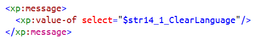
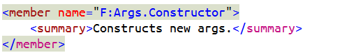
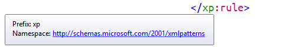

<div class='marketing'>
  <div class="page-header">
    <h1>XML <small>editor features</small></h1>
  </div>

  <div class="panel panel-alternate">
    <div class="panel-heading">Namespace Prefixes</div>
    <div class="panel-body">
      Customize how XML namespace prefixes are rendered in the VS XML editor through
      the &quot;XML Prefix&quot; entry in the <em>Fonts and Colors</em> options page.
      
    </div>
  </div>

  <div class="panel panel-default">
    <div class="panel-heading">XML Closing Tags</div>
    <div class="panel-body">
      Render XML closing element tags in a different color color through
      the &quot;XML Closing Tag&quot; entry in the <em>Fonts and Colors</em> options page.
      
    </div>
  </div>

  <div class="panel panel-alternate">
    <div class="panel-heading">Match Element Tags</div>
    <div class="panel-body">
      Highlight matching opening/closing element tags.
      
    </div>
  </div>

  <div class="panel panel-default">
    <div class="panel-heading">Resolve Namespace Prefixes</div>
    <div class="panel-body">
      Put the cursor over an XML namespace prefix, and a tooltip will
      tell you what it is mapped to in that context!
      
    </div>
  </div>

</div> <!-- tab page -->

